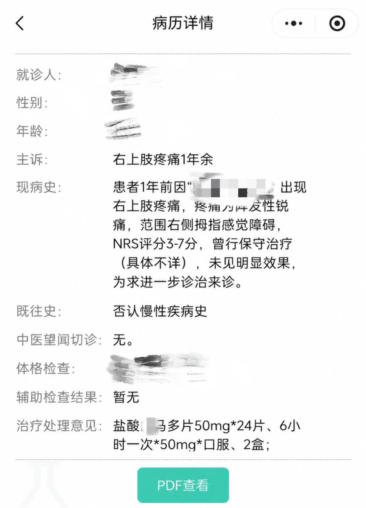

ominous
@UWATCHLIFE
@GptRainy 本壬一开始甚至都没说到慢性疼痛要不要用阿片类的问题，只事说到慢性疼痛患者在这样的环境下病耻感上升，为什么你受到的打击比曲马多戒断还要大本壬暂且蒙在致幻蘑菇里，，，

小雨（转生复活ing）
@GptRainy
@UWATCHLIFE 那我怎么就开到曲.马多了呃呃还有慢性疼痛本来就是非甾体优先啊，说我阿片恐惧症更是奇异搞笑，，，我只是在反驳你腰痛患者一定要用阿片类的结论 https://t.co/so1nEbS6Zk